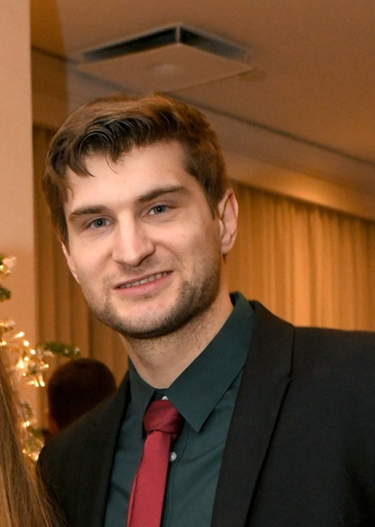
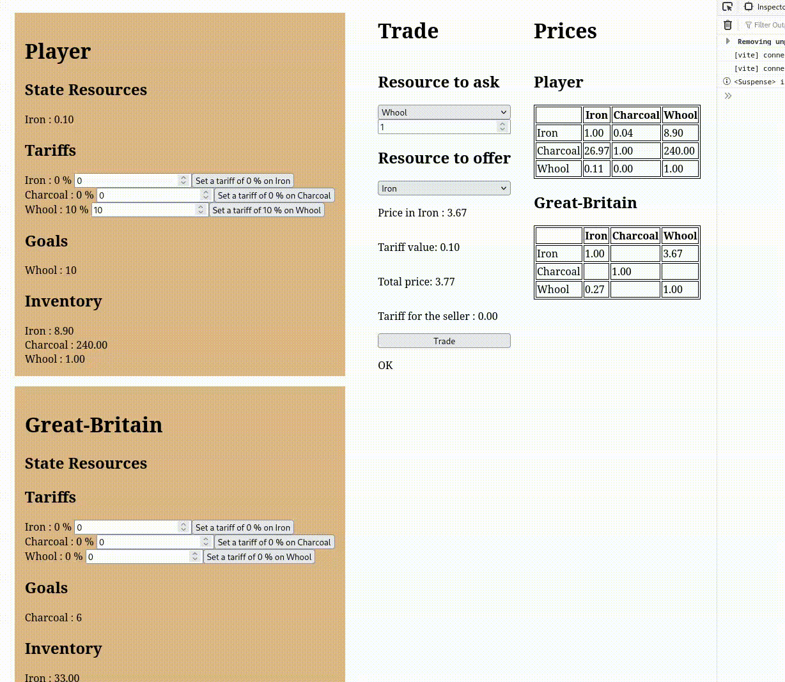

<!DOCTYPE html>
<html>

<head>
    <link rel="stylesheet" href="style.css">
</head>

</html>

<body>
    <div class="header">
        <div>
            
            <p><a href="tel:579-957-1526">Call me at 579-957-1526</a></p>
            <p><a href="mailto:lehmstedt-sebastien@hotmail.fr">Mail me at lehmstedt-sebastien@hotmail.fr</a></p>
            <p><a href="https://github.com/lehmstedt">See my public repos on my github</a></p>
        </div>
        
        <div>
            <h1>Sébastien Lehmstedt</h1>
            <p>Full stack developer</p>
            <p>8 years of experience</p>
            <p>Montreal</p>
            <p>Permanent resident</p>
            <p>Ready to work !</p>
            
            
        </div>
        <div>
            <p>I am a French developer who came in Quebec in 2019. I am orienting my developments on SOLID principles, for building maintainable, testable, sensible software for my peers.
                My strategy is to prioritize business rules over infrastructure details, for those details to depend on those rules.
                I allow those business rules to be testable as a living document, and I let its development be guided by unit tests.
                I think business rule progressive ownership is a required way to deliver an elegant solution to product problematic.</p></div>

    </div>

    <hr></hr>


    <div class="section">
        <h2>Skills</h2>

        <table class="skills-table">
            <tr>
                <th>Technology</th>
                <th>Years of experience</th>
            </tr>
            <tr>
                <td>Javascript</td>
                <td>7</td>
            </tr>
            <tr>
                <td>Git</td>
                <td>7</td>
            </tr>
            <tr>
                <td>SQL</td>
                <td>6</td>
            </tr>
            <tr>
                <td>.NET/C#</td>
                <td>4</td>
            </tr>
            <tr>
                <td>Unit testing: Jest/Xunit/Vitest</td>
                <td>4</td>
            </tr>
            <tr>
                <td>Angular/Typescript</td>
                <td>3</td>
            </tr>
            <tr>
                <td>VueJS</td>
                <td>2</td>
            </tr>
            <tr>
                <td>Spring Boot/Java</td>
                <td>2</td>
            </tr>
            <tr>
                <td>TDD</td>
                <td>1</td>
            </tr>
            <tr>
                <td>Clean/hexagonal architecture</td>
                <td>1</td>
            </tr>
            <tr>
                <td>DDD</td>
                <td>1</td>
            </tr>
        </table>
    </div>
    

    <div class="section">

        <h2>Professional experience</h2>
        

        <div class="experience-title">
            <h3>Nectari Software Inc.</h3>
            <h3>December 2024 - March 2025</h3>
        </div>
        <p>Joigned the R&D Team on Nectari Software, a BI (Business Intelligence) known as Sage Enterprise Intelligence</p>

        <ul>
            <li>Took part of a UI revamp, working closely with a UI/UX Designer</li>
            <li>Developed new features related to the new user experience</li>
            <li>Passed the required certifications for operating on Nectari Software : Architect, Universal Data Model, Data Sync, Administrator, Data Modeler Advanced, End User Advanced</li>
        </ul>

        <p>Technical stack : Jquery, KnockoutJs, Kendo, .NET Framework, SCSS, Azure Devops</p>

        <div class="experience-title">
            <h3>SIR Solutions</h3>
            <h3>October 2022 - December 2024</h3>
        </div>
        <p>Committed to Sttor, a pilot POS (Point Of Sale) solution for traditional and unattended
            stores</p>

        <ul>
            <li>Refactored and maintained a TPC level communication layer with unattended payment devices</li>
            <li>Built dashboards for monitoring, alerting and KPIs for production on Azure</li>
            <li>Worked within a autonomous R&D agile team in SCRUM</li>
            <li>Helped the Product Owner split functionalities into shippable user stories</li>
            <li>Used TDD for helping design software in a complex domain with various interacting business rules
                (promotions, accounting, taxes, regional laws)</li>
            <li>Worked with a Event Based feature for inventory management : eventual consistency, state rebuilding</li>
            <li>Developed and maintained ETLs for data aggregation in a Business Intelligence use case</li>
            <li>Promoted pair programming as a complementary practice to traditional code review</li>
            <li>Maintained CI/CD pipelines (Azure Devops) and progressively updated it to infra as code pattern</li>
            <li>Handled offline web use cases with IndexedDb : data synchronisation and retention strategies</li>
            <li>Deployed applications to production every 2 weeks, in a hybrid system with on-premise and cloud
                services, and remote potentially offline devices</li>
            <li>Curated software best practices, especially in software testing</li>
        </ul>

        <p>Technical stack : VueJS, .NET, SQL Server, Docker, Azure Devops</p>

        <div class="experience-title">
            <h3>Ordre des dentistes du Québec</h3>
            <h3>September 2019- October 2022</h3>
        </div>
        <p>As consultant at SII Canada, helped developing the full Information System revamp of
            ODQ, including the members portal and the administrative backoffice. Then, as a
            permanent, took the Programmer Analyst role for supporting previously developed
            features, and implement new ones</p>

        <ul>
            <li>Made use of reactive database (Firebase) and frontend (RxJS) to deliver a realtime user experience</li>
            <li>Worked with messaging paradigm (Azure Service Bus) for CQRS (Command and Query Responsibility
                Segregation)</li>
            <li>Leveraged the Event Sourcing infrastructure for debugging production bugs and propose workarounds
                when needed</li>
            <li>Integrated third party authentication schemes for SSO (Azure B2C)</li>
            <li>Implemented out of sync view rebuilding strategies for ETL like use cases (aggregation, dashboards)</li>
            <li>Supported the application for end users : need collection, feature request prioritization, working closely
                with the CTO</li>
            <li>Programmatically built Reports with DevExpress</li>
            <li>Maintained CI/CD pipelines</li>
            <li>Deployed to production in a Kanban fashion</li>
            <li>Analyzed feature requests and broke it down in user stories</li>
        </ul>

        <p>Technical stack : Angular, .NET, SQL Server, Firebase, CosmosDb, Azure Devops</p>

        <div class="experience-title">
            <h3>Orange</h3>
            <h3>October 2027 - March 2019</h3>
        </div>
        <p>After an intensive one month software design training, I took part of the application
            maintenance team at SII in France. I worked for two Orange projects :
            - QOS : A Quality Of Service tool for networking engineers and technicians
            - ROSE : A Orange Digital TV backend component</p>

        <ul>
            <li>From a 3D realtime rendering technical background, got up to speed in web software design
                (Angular/Spring Boot, SQL) with the building of a sandbox application about technical curation</li>
            <li>Developed features and fix bugs for the Orange projects</li>
            <li>Attended meetings with the clients regarding sprint reviews and technical teams coordination</li>
            <li>Managed software integration with network probes</li>
            <li>Brough application SOAP contract evolutions with SOAPUI</li>
            <li>Managed SOAPUI Test suites (functional and load)</li>
            <li>Written and maintained the applications unit tests</li>
            <li>Executed and maintained the QA test plans (SquashTM) at each sprint delivery</li>
        </ul>

        <p>Technical stack : AngularJS, Angular, Spring Boot, J2EE, MySQL, Jenkins</p>
    </div>
    

    <h2>Personal projects</h2>

    <div class="project-grid">
        <a href="trade-wars.html" class="project-overview">
            <h3>Trade wars</h3>
            
        </a>
        <a href="war-fog.html" class="project-overview">
            <h3>War fog</h3>
            
        </a>
    </div>

    

</body>